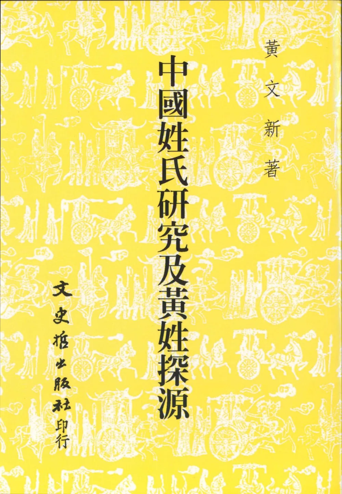
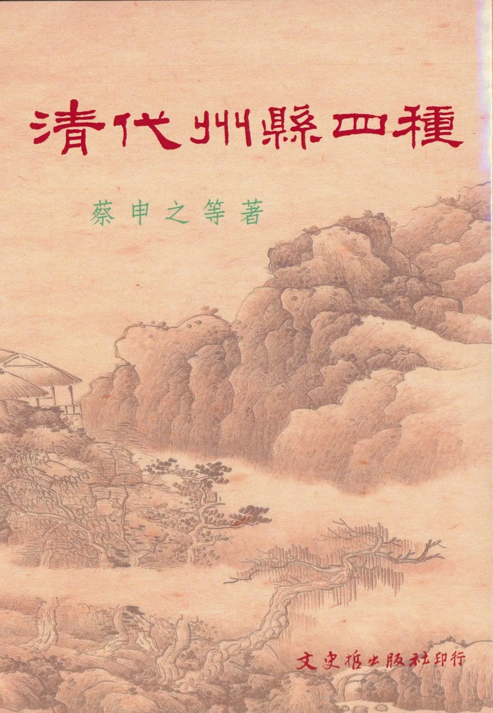
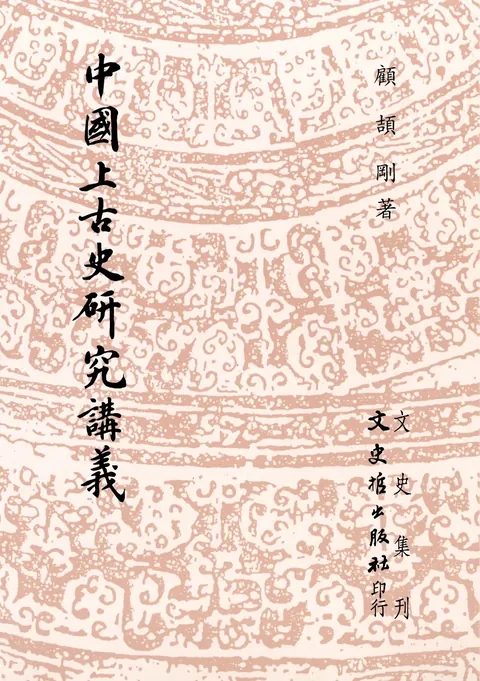
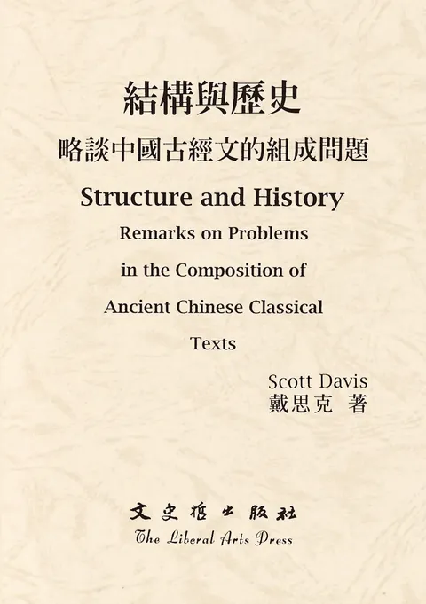
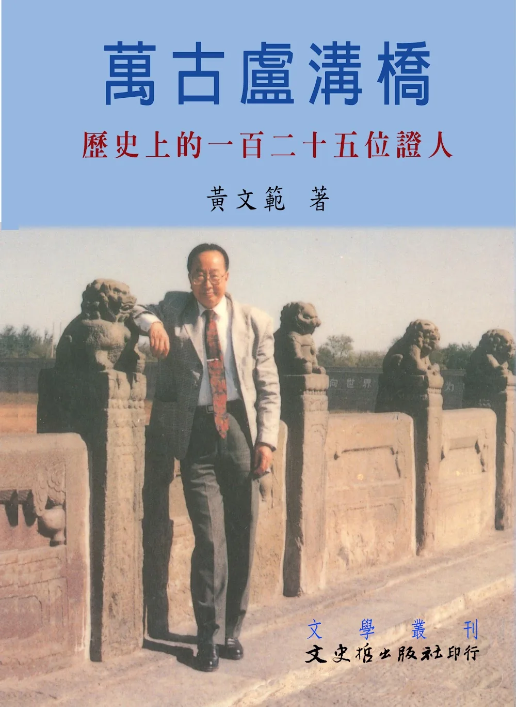
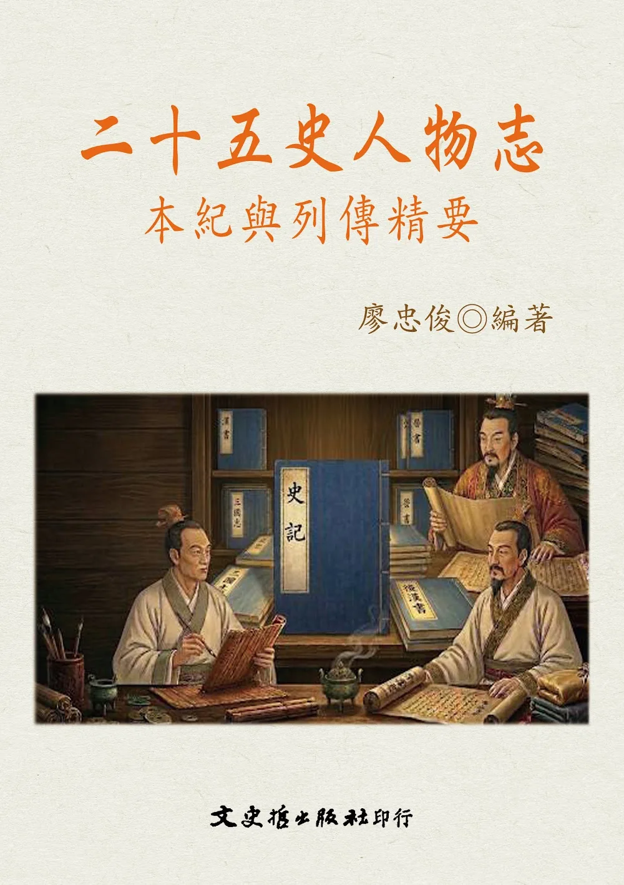

中華紀元年表
NT$ 960

宋東京考
NT$ 500
中華民族紀元年表
NT$ 1960

千秋人物
NT$ 2200

陳書異文考證
NT$ 460

中國姓氏研究及黃姓探源（BOD）
NT$ 340

中國近代史
NT$ 2500

清代州縣四種
NT$ 300

史諱舉例（重版）
NT$ 300

史記方法試論
NT$ 0

中國上古史研究講義
NT$ 420

史記會注考證（再版）
NT$ 800

尋求歷史的謎底（一）
NT$ 420
尋求歷史的謎底（二）
NT$ 420

結構與歷史：略談中國古經文的組成問題（中英文本）
NT$ 160

萬古盧溝橋－歷史上的一百二十五位證人
NT$ 0

趣味的新思維歷史故事
NT$ 320

二十五史人物志-本紀與列傳精要
NT$ 280
蔣介石軍事思想與研究
NT$ 460